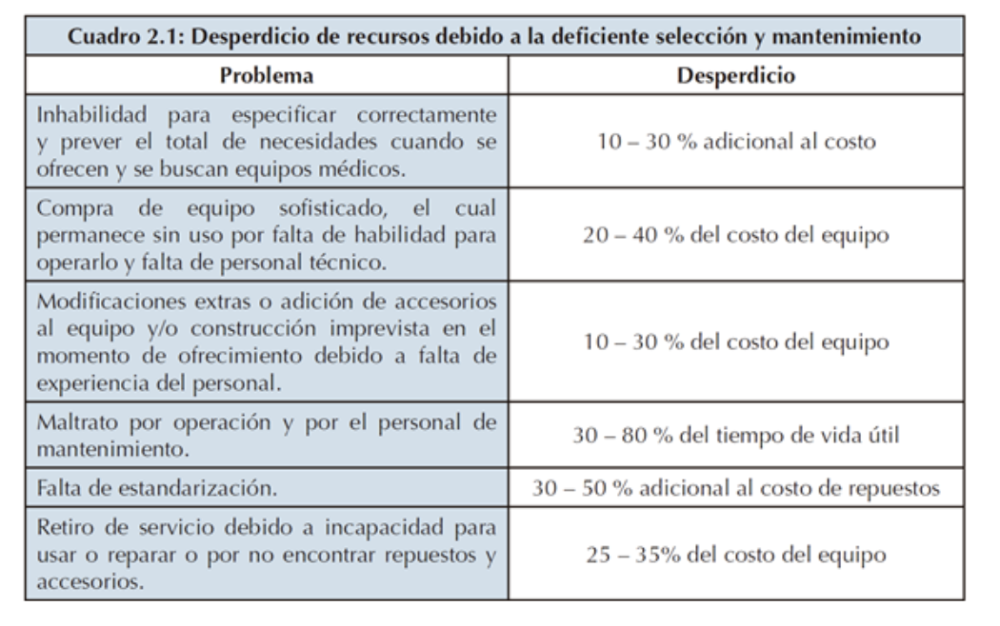

Problemática e
identificación del efecto
La gestión de tecnología en salud involucra un desarrollo multidisciplinario que se rige porcuatro procesos principales:
Planificación, adquisición, gestión de propiedades y gestión deriesgos (1).
Estos son el producto de la calidad del servicio que brinda un establecimientode salud ya sea de carácter privado o público, además de consolidar el grado de interacciónque tiene cada línea de trabajo dentro del mismo establecimiento.
Figura 1. Processes and organizational requirements for functional technology in clinical services. Healthcare Technology Management Systems
Los establecimientos sin la capacidad de unificar ni de tener un enfoque sistémico de losmismos presentarán dificultades en lo que respecta a su evolución, tienden a estancarse endistintos niveles organizacionales viéndose reflejados en el mal estado de su contexto,recursos (financieros, humanos, tecnológicos, temporales), procesos clínicos y en todoafectando de forma contraproducente al paciente.
La incorporación de tecnología en los sistemas de salud es desencadenante de un factor deriesgo debido a la falta de un sistema de gestión completo con procesos, indicadores yresponsabilidades (1). El ciclo de vida de la tecnología en salud representado en la Figura 2es una manera de esquematizar el flujo de las etapas necesarias para la correctaorganización y administración de los recursos tecnológicos en salud, sistema que esnecesario poner en práctica para generar un cambio en la realidad nacional.
Figura 2. Health Care Technology Life Cycle University of Vermont, USA, 2019
Se sabe que entre el 40 y 70 por ciento de dispositivos y equipo en países de bajos ymedianos ingresos están rotos, no utilizados o no aptos para su uso; esto perjudica laprestación de servicios a los pacientes y da como resultado la pérdida de recursos (2). Losmétodos de adquisición indiscriminados, la falta de coincidencia en el diseño y la demandade tecnología, los altos costos y los desafíos de implementación, mantenimiento ycapacitación de recursos humanos contribuyen a este problema(3).
En lo que respecta a la realidad nacional, la Norma Técnica de Salud: “CATEGORÍAS DEESTABLECIMIENTOS DEL SECTOR SALUD”, describe a un establecimiento de salud desegundo nivel como hospitales o clínicas de atención general con funciones de promoción,prevención, recuperación, rehabilitación y gestión. Además de diferenciarse de otras categorías por la contar con 14 UPSS (Unidad Productora de Servicios de Salud), que son las unidades básicas funcionales de un establecimiento de salud(4).
Figura 3. Categorías de establecimientos de salud por niveles de atención. Norma Técnica de Salud
Particularmente en el establecimiento existen UPSS (Unidades Productoras de Servicios deSalud) tanto de atención directa como de soporte, y entre las que destacan por nuestro interés particular se encuentran: UPSS Emergencia, UPSS Hospitalización, UPSS CentroQuirúrgico y UPSS Cuidados Intensivos, cuyos equipamientos mínimos para el funcionamiento de la misma se se detallan detallan en los Anexos 10,13 y 14 de la NormaTécnica de Salud: “INFRAESTRUCTURA Y EQUIPAMIENTO DE LOS ESTABLECIMIENTOS DE SALUD DEL SEGUNDO NIVEL DE ATENCIÓN” . Analizando los mismos se establece que cada una de las UPSS necesita por lo menos (entre otrosequipamientos) un (01) coche de paro equipado (código D-109). (5)
Figura 4. Req uerimientos de coche de paro por UPSS.
Considerando la necesidad de un coche de paro equipado en cada una de las áreas presentes de los establecimientos de salud (categoría II) es vital hacer un análisis a fondo sobre los componentes que lo conforman, particularmente de los desfibriladores listados enel Anexo 5 (Listado de Equipos Biomédicos) como parte del de la Norma técnica de salud de los servicios de emergencia(6).
Por ello, se planteó como problema específico dentro de la problemática ya descrita en la introducción:
“Inefectividad del sistema de planificación y gestión de desfribiladores semi automáticos con sistema de baterías respecto a la especificidad y seguimiento post-adquisición en un establecimiento de salud tipo II-2 en las áreas de hospitalización y cirujía. ”
Medida del efecto
Según la Organización Mundial de la Salud (2012), las tecnologías sanitarias (TS) son esenciales para el funcionamiento de un sistema de salud. En particular, los dispositivos médicos son indispensables para la prevención, el diagnóstico y el tratamiento de enfermedades y dolencias, y también para la rehabilitación de los pacientes.
Además, se define la gestión de la tecnología en salud como:
“Un abordaje sistemático y cuantificable para asegurar que la relación costo/efectividad, eficiencia, seguridad y tecnología disponible sea lo apropiado para cubrir con calidad la demanda por el cuidado de los pacientes” (1)
Sin embargo, cuando no existen planificación y gestión de la tecnología eficaces en relación con la reparación y el mantenimiento de los equipos hospitalarios dan como resultado el desperdicio de recursos y costos adicionales (11).
15-30%
de los fallecimientos mundiales de causa natural se producen de manera súbita. (12)
80%
de las muertes se da en el contexto de una cardiopatía coronaria conocida o no. (13)
30 000
casos estimados por Muerte SÚbita Cardiaca (MSC) en el Perú.
En el mundo, alrededor del 15,0 al 30,0 % de los fallecimientos de causa natural se producen de manera súbita (12). Un gran porcentaje de las muertes súbitas (MS) pertenecen a personas que posean factores de riesgo cardiovasculares. Dentro de las muertes súbitas cardiacas (MSC), el 80 % de las muertes se da en el contexto de una cardiopatía coronaria conocida o no. En la mayoría de los casos la isquemia desencadena procesos de taquiarritmia ventricular que terminan en fibrilación ventricular, que es la responsable final de la MS (13). El efecto del desfibrilador, impacto tecnológico, es la aplicación brusca y breve de una corriente eléctrica de alto voltaje para detener y revertir las arritmias cardiacas rápidas (taquicardia ventricular sostenida, fibrilación ventricular) o paro cardiaco súbito (PCS). En Perú, no hay estadísticas de MSC, ya que no se cuenta con un registro unificado de atención de emergencias, pero de acuerdo a la incidencia mundial; sin embargo, la incidencia mundial es de 0.55 a 1 por cada 1000 habitantes con lo cual podríamos tener 15,000 a 30,000 casos por año.
La adquisición de desfibriladores tendría un impacto en la sociedad mitigando los riesgos, minimizando los impactos negativos y ofreciendo a la población una adecuada atención de una real emergencia como lo es un PRS.
Comparación con estandares
Para identificar el problema es necesario analizar la brecha tecnológica. En este contexto, se analizará la brecha entre sistemas clínicos de mantenimiento y adquisición de equipos médicos.
En primer lugar, Latinoamérica se enfrenta a un principal problema de deterioro de servicios de salud y en la tecnología biomédica usada
50%
de los equipos biomédicos se encuentran en buen funcionamiento y la otra mitad se encuentra en mal estado o no cumple con los estándares de seguridad para su uso (7).
A este lado de la brecha, esto se debe principalmente a la desalineación entre las decisiones de compra y las metas de las instituciones prestadoras de servicios de salud, la no realización de cambios organizacionales necesarios para la implementación de la tecnología, la falta de métricas para el monitoreo de los beneficios obtenidos y la ausencia de planeación estratégica para prevenir fallos y mitigar riesgos (7).
Por el otro lado de la brecha, departamentos de ingeniería clínica de hospitales de todo el mundo, incluidos Canadá, Australia y Estados Unidos, han empezado a emplear estrategias de mantenimiento más eficientes y rentables (8). Gentles et al (9) han comenzado a desarrollar una base de datos única para recopilar datos comparativos sobre el inventario y el mantenimiento de los dispositivos más críticos utilizados en los hospitales de Canadá y Estados Unidos. De esta manera, este proyecto proporcionará un gran conjunto de datos estadísticos de fallas que podría usarse para establecer intervalos óptimos para la programación de mantenimiento de rutina (9).
Además, estos sistemas no solo buscan la programación periódica de numerosas sesiones de mantenimiento de dispositivos médicos, sino que también toman en cuenta que el mantenimiento preventivo innecesario y excesivo podría generar pérdidas iguales o mayores a un nivel inadecuado de mantenimiento. Cuando la Comisión Conjunta de Acreditación de Organizaciones de Salud (JCAHO) introdujo el estándar EC.6.10 (10), los hospitales en los Estados Unidos comenzaron a adoptar sus programas de mantenimiento para poner sus recursos de mantenimiento donde más se necesitan. Esta norma permite que los hospitales no programen sesiones de inspección o mantenimiento para ciertas piezas o tipos de equipos médicos, si estas tareas no son necesarias para una operación segura y confiable (10).
De esta manera, en base a los estándares internacionales y conociendo el contexto de la problemática, es posible trazar un horizonte objetivo al que direccionar esta investigación.
Cuantificación del Impacto
Según Dirección General de Inversión Pública del Ministerio de Economía y Finanzas (2017)
La muerte súbita cardiaca afecta en Europa alrededor de 350 000 a 700 000 individuos por año, y de un 25 a 30% de las víctimas presentan una fibrilación ventricular como ritmo inicial.
Según el Diario Gestión (lunes 28 de agosto 2017) .
Apoyo Consultoría estima que la inversión en el sector salud alcanzó el 2016 los S/12.500 millones, de los cuales el 60% se destinó a infraestructura, el 30% a equipamiento y vehículos y el 10% al mobiliario. Ronald Estremadoyro, director general de Royal Philips en el Perú, una de las firmas líderes mundiales en fabricación de equipos médicos , indicó que la inversión en equipos es baja en el Perú, lo que ha provocado que surjan y tengan éxito muchos centros especializados en la prestación de servicios con equipos médico
La pérdida de recursos debido a una pobre selección y mantenimiento de equipo médico puede observarse en el siguiente cuadro .

Aún no se han realizado estudios similares para el sector salud peruano, sin embargo, el
CENGETS - PUCP, basado en experiencias locales, estima que el desperdicio de recursos
económicos es superior a dos veces el costo del equipo; así, el tiempo de vida útil del equipo es inferior a la mitad de lo establecido por el fabricante (Rivas, R y Vilcahuamán,L , 2006)
Bibliografía:
- Rivas, R., & Vilcahuamán, L. (2017). Healthcare Technology Management Systems: Towardsa New Organizational Model for Health Services (1st ed.). https://doi.org/10.1007/978-981-10-4086-3_64
- Diaconu, K., Chen, Y.-F., Cummins, C., Jimenez Moyao, G., Manaseki-Holland, S., & Lilford,R. (2017). Methods for medical device and equipment procurement and prioritization withinlow-and middle-income countries: findings of a systematic literature review. Globalization andHealth, 13(1). https://doi.org/10.1186/s12992-017-0280-2
- World Health Organization. Medical devices: Managing the Mismatch (An outcome of thePriority Medical Devices project). Geneva; 2010
- Ministerio de Salud. (2014, November). Norma Técnica de salud: “Categorías deestablecimientos del sector salud”. Retrieved from http://www.digemid.minsa.gob.pe
- Ministerio de Salud, Dirección General de Infraestructura, Equipamiento y Mantenimiento.(2014, September). Norma técnica de salud: “Infraestructura y equipamiento de losestablecimientos de salud del segundo nivel de atención”. Retrieved from http://www.diresaapurimac.gob.pe
- Ministerio de Salud. (2007, March). Norma técnica de salud de los servicios de emergencia.Retrieved from http://bvs.minsa.gob.pe/local/dgsp/NT042emerg.pdf
- C.P, Carolina, & P. H., Lizeth. (2015). ANÁLISIS COMPARATIVO DE MODELOS DE GESTIÓN DE TECNOLOGÍA BIOMÉDICA. Revista Ingeniería Biomédica, 9(18), 41-49. Recuperado en 01 de septiembre de 2019, de http://www.scielo.org.co/
- Jamshidi, Afshin & Abbasgholizadeh Rahimi, Samira & Ait-Kadi, Daoud & Ruiz, Angel. (2014). Medical devices inspection and maintenance; a literature review. IIE Annual Conference and Expo 2014. 3895-3904.
- Gentles Bet al, 2010, http://CESOData.ca.
- Joint Commission on Accreditation of Healthcare Organizations (JACAHO), 2004, Hospital Accreditation Standards. Joint Commission on Accreditation: Oakbrook Terrace, IL
- Malloupas, A. (1986). Strategy and Proposed Action Concerning Maintenance and Repair of Hospital and Medical Equipment. World Health Organization.
- Fauci, A. S., Braunwald, E., Kasper, D. L., & Hauser, S. L. (2008). Cardiovascular Collapse, Cardiac Arrest and Sudden Cardiac Death. Harrison´s Principles of Internal Medicine. McGraw-Hill.
- Gutiérrez Báez, Y., Castellanos Rojas, R., Ferrer Herrera, I., Cabrera Pelaez, Y., Avila Frometa, I., & Hernández Julbec, J. (2015). Muerte súbita cardiovascular. Finlay, 5.